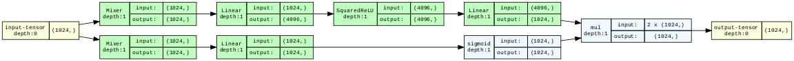

RWKV, Explained

Why does RWKV matter?
At time of writing in July 2023, the best models of language are all Transformers.
Their language modeling capabilities are so strong that they can be used for a variety of cognitive tasks, from agent simulation to writing and debugging code.
If you joined the world of neural networks within the last two years, you could be forgiven for assuming that Transformers are an obvious type of model for language, possibly going back to the beginnings of neural networks in the 1940s.
They are not.
Arguably the most natural model for language is the recurrent neural
network, or RNN, which is basically "just" a
map-reduce.
That is, we do a for loop over the input, building up a result
step-by-step.
As many Python programmers learn early
on,
for loops can be unbearably slow, and the trick to speed them up is
vectorization. That is, by hand or compiler, we rewrite the program to
operate on an entire sequence at once, instead of step-by-step.
Like vectorized programs, Transformers being trained operate on entire sequences at once and so are more easily parallelizable -- and so that training has been executed at the molar scale normally reserved for chemists, not programmers.
However, that benefit does not transfer to inference time, when we use the Transformer to generate new sequences of text -- whether to chat with a user or to drive a robot.
Instead, the choices that made the Transformer easy to parallelize make inference expensive -- each time the model creates a new word, it must in essence re-read the whole sentence up to that point, plus the new word, before it can proceed with another.
Clever caching can convert (re-)computation to memory storage, but the price must be paid.
But could it be different? Can we come up with an architecture that has Transformers' non-negotiable parallelization at train time but without the price at inference time?
Many alternative architectures have been proposed since the Transformer, from more efficient attention layers to reworked convolutional networks.
These alternatives generally show promising results up to a certain scale, say 1B parameters and 20B tokens, or >50x less than less than the current maximum scale for commercially available language models at time of writing (70B parameters, 2T tokens).
However, they have a reputation for falling off the scaling laws at some point shortly after.
The Receptance-Weighted Key-Value architecture, RWKV, has stayed on the scaling laws up to 14B parameters and 331B training tokens, which makes it, at time of writing, the largest-scale publicly-known non-Transformer generative language model. See the paper for details.
Through just some quick algebraic manipulation of exponentials, RWKV's computations can be written in either of two ways: "time-parallel mode" or "RNN mode".
Essentially, these exponentials look a bit like the softmax
normalization in Transformer attention (exp(w * k) v / exp(w * k)) in
time-parallel mode but look like a multiplicative decay in a memory
(exp(-tw)) in RNN mode. Alternatively, they look a bit like an
unrolled loop and its vectorized form.
So, with RWKV, we get to have our cakes and eat them too: parallelizable training AND efficient inference AND Transformer-level language modeling quality.
Efficient, RNN-style inference means it's possible to run an int8
14B parameter RWKV model on sequences of any length with a constant
memory requirement of 3GB VRAM. This opens up opportunities for
language model-powered cognitive features in tightly-constrained edge
environments with streaming inputs, like robotics, even if RWKV turns
out, like other Transformer alternatives, to fall off the scaling laws
eventually.
This blog post walks through how RWKV's RNN-style inference works, based on the thesis that unvectorized code is easier to understand and gets you most of the way to understanding the whole system.
Why read this post?
There are other write-ups on RWKV, so why read this one?
It's a matter of taste!
-
The RWKV paper, uses equations to explain the architecture, and this post uses Python code. The code is woven into the explanatory text, literate programming style. If you'd like to execute and edit that code while reading, check out the Google Colab version here. It's also aimed at experts, and this post starts from the beginning on autoregressive language modeling.
-
The (excellent) blog post on RWKV by contributor Johan Wind on which this post is based also interweaves code with text and is aimed at a broad audience, but it is written in numpy. That makes a lot of the state-handling explicit and is great if you're familiar with that library, but the code looks quite different from an implementation in PyTorch, which is more typically used to implement neural networks like RWKV.
-
The reference PyTorch implementation is written for concision (single-letter variable names, minimal comments) and robustness (numerical tricks). The implementation in this post is written to be understood and sacrifices performance for clarity, e.g. including runtime type checking, but produces identical results.
One last note on style and audience: this is most definitely a tutorial!
If you're already friendly with Transformers and in a hurry, feel free to skip down to the "zero-layer RWKV" section.
Setup
Since we're writing real code that runs in an executable Colab notebook, not pseudocode, we've got to do a bit of setup.
Dependencies and Utilities
There's nothing too interesting here -- we'll talk about the libraries as they come up.
# Colab comes with lots of packages already -- see https://research.google.com/colaboratory/local-runtimes.html
# install a package for handling text input to the model
%pip install -qqq tokenizers==0.13.3 1> /dev/null
# install packages for runtime typechecking of arrays, more on this later!
%pip install -qqq beartype==0.14.1 jaxtyping==0.2.20 1> /dev/null
# install a neat little package for visualizing PyTorch graphs
%pip install -qqq torchview==0.2.6 1> /dev/null
# bring in some utilities from a GitHub gist
!wget --quiet https://tfs.ai/rwkv-explainer-utils -O utils.py
import utils # useful stuff that distracts from the main points about RWKV and LMs
from utils import LoadingMixin, display_graph, make_graph, prep_weights
Configuring Torch
We'll implement RWKV in PyTorch, a popular Python wrapper around fast tensor math and automatic differentiation in C++.
import torch
But we're just talking about RWKV during inference, not training, so we don't need the differentiation.
torch.autograd.set_grad_enabled(False);
We use double-precision (64 bit) floating point numbers in our tensor math, accepting a big slow-down so that we can totally ignore numerical stability in favor of clarity.
This is a tutorial, so our brains are the rate-limiting component, not the machines!
torch.set_default_dtype(torch.float64)
Downloading and Setting Up Weights
Like other neural networks, a trained RWKV model is defined in terms of a large number of floating point numbers, called the "weights" or "parameters" of the model.
We want our outputs to 1) look like real language and 2) be comparable to the reference implementation, so we pull down those trained weights for the 430M parameter RWKV-4 model.
from pathlib import Path
weights_path = Path("RWKV-4-Pile-430M-20220808-8066.pth")
if not weights_path.exists():
!wget -q https://huggingface.co/BlinkDL/rwkv-4-pile-430m/resolve/main/{weights_path.name} 1> /dev/null
print(f"Loading {weights_path}")
weights = torch.load(weights_path, map_location="cpu")
weights = prep_weights(weights)
Loading RWKV-4-Pile-430M-20220808-8066.pth
Defining the External Interface: Strings and Tokens
We're going to work "backwards" from the model's external interface to its internals.
So we'll spend a bit of time up front on language modeling in general.
If the phrase "Like a Transformer LM, an RWKVLM is an autoregressive probabilistic model of sequences of linear embeddings from a vocabulary of tokens" makes sense to you, you can skim this section and the next. Jump back in at the "zero-layer RWKV" section.
If not, let's make it make sense!
Tokenizer: the string-token and token-string interface
For our model, a language is a collection of sequences of tokens from a vocabulary -- you might think of the tokens as letters from the alphabet "vocabulary" forming sentences in the English language, or bytes forming valid strings.
It's be great if our tokens were just the bytes in strings, so we could just use strings as the interface between the world of language and our model, but the tokens for the most capable language models, including this version of RWKV, aren't quite so simple -- they are collections of letters that appear together frequently.
So to define our tokens, we need to construct a Tokenizer, a sort of
"baby language model" that works directly on bytes/letters and feeds its
outputs to the "real language model".
In the cell below, we pull down the Tokenizer that goes with RWKV-4
430M.
from tokenizers import Tokenizer
tokenizer_path = Path("20B_tokenizer.json")
if not tokenizer_path.exists():
!wget -q https://raw.githubusercontent.com/BlinkDL/ChatRWKV/main/{tokenizer_path.name} 1> /dev/null
tokenizer = Tokenizer.from_file(str(tokenizer_path))
The tokenizer can encode and decode strings as sequences of integers
identifying tokens in our vocabulary.
from collections.abc import Callable
tokenizer.token_to_id: Callable[[str], int]
That last line is a type
annotation -- by itself
it doesn't do anything other than document something. In this case, it's
saying that .token_to_id is
- a
Callablemethod - that takes in
[]astring - and returns an
integer.
Like this:
id = tokenizer.token_to_id("Drosophila")
id
37815
We can also convert back to a string with our Tokenizer
print(tokenizer.id_to_token(id))
Drosophila
So the Tokenizer handles both ends of the outermost interface for our
model: it translates between the strings that humans (and traditional
software!) like and our token identifiers.
The vocabulary always has a specific, finite size.
For us, it's ~50,000:
N_VOCAB = 50_277
token_id = N_VOCAB + 10
if 0 <= token_id < N_VOCAB:
assert tokenizer.id_to_token(N_VOCAB) is None
print(f"index {token_id} is in vocab")
else:
assert tokenizer.id_to_token(N_VOCAB) is None
print(f"index {token_id} is not in vocab")
index 50287 is not in vocab
So we can identify a token identifier with just a single integer.
That's not a great way to represent data for a neural network, so we'll need to do another transformation before we're ready to hand things off.
Why is an integer not a great input?
Neural networks are trained using
calculus,
so they need something smoother, like floats.
And they work best when there are a lot of numbers, aka on an array or
Tensor with large dimensions.
So let's convert our token-identifying integers into Tensors full of
floats.
PyTorch gives us the tools we need to dynamically manipulate Tensors
in Python using fast compiled C++ code. Great!
Unfortunately, providing good types for dynamic tensors is hard (for the curious: you need type-level arithmetic, variadic generics, and more).
So there isn't great support built into the Python type system or into PyTorch itself.
So let's pull in a typing library, jaxtyping, to get some nice
Tensor types.
from jaxtyping import Float64
Float = Float64 # convenient type synonym, good for easily switching float types later
Because our vocabulary is a fixed size, there's a neat, if somewhat
wasteful, way to represent the token id ii as a Tensor: make a big
Tensor with 0s everywhere except in the index ii, which is 1.
This is called a One-Hot representation, and it is a kind of
"sparse" tensor -- one that's mostly zeros.
OneHot = Float[torch.Tensor, f"vocabSize={N_VOCAB}"]
OneHot
jaxtyping.Float64[Tensor, 'vocabSize=50277']
Notice that our type includes some nice metadata, documenting its size and what that size means.
We're going to need OneHots a lot, so let's define a function to
create them:
def to_onehot(k: int) -> OneHot:
out = torch.zeros(N_VOCAB)
out[k] = 1.
return out
to_onehot(1)
tensor([0., 1., 0., ..., 0., 0., 0.])
That type annotation is nice documentation of the intended interface for this function.
But the best documentation is automatically checked so that it stays in sync with the code it documents.
So let's bring in a runtime type checker! That way you know you can trust the type signatures you're reading.
We'll use beartype:
from beartype import beartype, roar
to_onehot = beartype(to_onehot)
try:
print(to_onehot("hey"))
assert False, "the code in this blog post is wrong!"
except roar.BeartypeCallHintException:
print(" rawr! that input type is not allowed")
try:
print(to_onehot(N_VOCAB - 1))
except roar.BeartypeCallHintException:
assert False, "the code in this blog post is wrong!"
rawr! that input type is not allowed
tensor([0., 0., 0., ..., 0., 0., 1.])
In some places, we'll use ints as the Identifiers of our Tokens.
In others, we'll use the OneHot tensor.
So we define a type that is either an int or (|) a TokenId.
TokenId = int | OneHot
TokenId
int | jaxtyping.Float64[Tensor, 'vocabSize=50277']
AutoregressiveLM: a token-token interface for language modeling
Now that we can convert from strings to tokens, we have the inputs to our language model.
To understand the output of our language model, we need to be a bit more precise about what it does.
Language models are probabilistic. They can make inferences about sequences of tokens. For example, they can predict which word is missing from a sequence or which word might come next if it were to continue.
That means our model deals in chance or plausibility, not deterministic
outcomes. We will output Probabilities.
An autoregressive language model uses the beginning of a sequence to
predict the Next Token in the sequence.
RWKVLM is an autoregressive language model, so it will output
NextTokenProbabilities -- a tensor with a probability for each element
of the vocab, representing the model's estimate of the chance that token
comes next in the sequence.
NextTokenProbabilities = Float[torch.Tensor, f"vocabSize={N_VOCAB}"]
NextTokenProbabilities
jaxtyping.Float64[Tensor, 'vocabSize=50277']
With these in hand, we can define the behavior of an Autoregressive
Language Model:
class AutoregressiveLM(torch.nn.Module):
"""An LM that can continue a sequence by generating one token at a time."""
@beartype
def generate(self, sequence: str="", N: int=1, temperature=1.0, top_p=1.0) -> NextTokenProbabilities:
"""Generates N additional tokens that might follow the provided sequence."""
token_ids = tokenizer.encode(sequence).ids
if not (sequence_length := len(token_ids)): # handle empty sequence
probs: NextTokenProbabilities = self(0) # 0 is a special token id, marks a boundary
for ii in range(sequence_length + N):
if ii < sequence_length: # at first, tokens come from the sequence
token = token_ids[ii]
else: # then after that, we're generating new tokens
token = utils.sample(probs, temperature=temperature, top_p=top_p)
# we get the probabilities for the next token by calling the model on the current token
probs: NextTokenProbabilities = self(token)
# and print the sequence as we go
utils.streaming_print(tokenizer.decode([token]))
return probs
The temperature and top_p parameters are included so that we
can match the typical generation interface for models like OpenAI's
GPT-4 and Anthropic's Claude, but the details don't matter to us today,
so we've abstracted them behind the utils.sample function.
At the core, we're just doing in Python what we said in English above:
predicting the next token in a sequence repeatedly, based on what we've
seen so far, by calling the model (self) on the latest token.
You might wonder how our model knows about the past of the sequence,
since we're just calling it with the current token.
The key is that we're inheriting from torch.nn.Module here.
A Module is like a function, in that its main purpose is to be called,
but it is also like an object, in that it is also able to hold onto
state from iteration to iteration.
That state is where we'll hold onto the parameters of the model. It's also where we'll hold onto information about past tokens we've seen.
But, you might object, we skipped defining what happens when the model is called!
That's true, but we can just define it now -- for a Module, that's
done via the forward method:
@beartype
def forward(self, token: TokenId) -> NextTokenProbabilities:
token = to_onehot(token) if isinstance(token, int) else token
# use that onehot to retrieve the token's dense vector representation, or "embedding"
embedded_token: Embedding = self.embedding(token) # yes, DNN people really do say "embedding" this much
# apply the "meat" of the model to enrich the embedding (with sequence context plus knowledge from the weights)
sequence_embedding: Embedding = self.blocks(embedded_token)
# use that to assign probabilities to each possible next token
probs: NextTokenProbabilities = self.unembedding(sequence_embedding)
return probs
# attach forward to our AutoregressiveLM class
AutoregressiveLM.forward = forward
This is a neat little pattern that Python supports but which you rarely see outside of a notebook environment: defining methods after the class has been defined.
We'll do this throughout the post so that we can split implementations into smaller pieces and focus on important details first.
In the cell above, we've isolated just the forward method.
Right now, it's pretty abstract: it calls some method called embedding
that returns an Embedding, which it passes through a method called
blocks that returns a new Embedding. That final piece is
unembedded to produce the probabilities we need to fit the
AutoRegressiveLM interface.
At this high of a level, there's no difference between an
AutoregressiveLM that uses Transformer-style blocks and one that uses
RWKV-style blocks.
Following our "inside-out" approach, we'll first define the embedding
and unembedding, in the next section, before we dive into the
RWKV-specific details.
We'll close out this section, and our implementation of
AutoregressiveLM, by defining how it's initialized:
def __init__(self, embedding_layer, blocks, unembedding_layer):
super(AutoregressiveLM, self).__init__()
self.embedding: TokenEmbedding = embedding_layer
self.blocks: Callable[[Embedding], Embedding] = blocks # RWKV will go here
self.unembedding: Unembedding = unembedding_layer
AutoregressiveLM.__init__ = __init__
Defining the Internal Interface: Embeddings and Unembedding
Our autoregressive language model uses this Embedding type as its
internal representation.
Let's see how it is produced from our TokenIds and how it gets turned
into NextTokenProbabilities.
TokenEmbedding: From token identifiers to dense tensors
The inputs and outputs of neural networks are often sparse tensors, as
we saw with the OneHots above: most of the entries are zeros.
But in their guts, neural networks are tensor calculus machines, applying dense tensors of floats to dense tensors of floats.
So the "interface" inside of our network is a dense tensor -- and one much smaller than our vocabulary.
The internals of our network will all "speak" dense tensor.
There are many other names for these dense float tensors, but we'll
stick with Embedding since that has taken off in the era of
embedding-based vector search for LLMs, and we'll use channel to refer
to an individual dimension, because EmbeddingDimension is a mouthful.
Why are they called "embeddings"? Roughly, because they are created by
taking a pointy object, like our collection of OneHot tensors that are
all far away from each other (imagine 50,000 vertices on a big cube),
and smushing them together into a smooth object. Vicki Boykis has a
great write-up here.
N_EMBD = 1024
Embedding = Float[torch.Tensor, f"channels={N_EMBD}"]
# aka internal representation, aka hidden state, aka latents, aka "residual stream"
Embedding
jaxtyping.Float64[Tensor, 'channels=1024']
We build another torch.nn.Module to compute our Embeddings.
It has two steps: first we compute the dense vector from our OneHot
and then we normalize it, so that its length is always the same.
@beartype
def forward(self, token: TokenId) -> Embedding:
token = to_onehot(token) if isinstance(token, int) else token
embedded_token: Embedding = self.embedding(token)
normalized_embedded_token = self.normalize_emb(embedded_token)
return normalized_embedded_token
We'll be normalizing our embeddings a lot. You might ask why.
Like with many things in neural networks, the typical answer is "it helps with optimization" and the real answer is "the thing stops working if we don't".
But how exactly do we do our normalization and how do we get that dense vector?
PyTorch has built in nn.Modules for these operations, so we can just
add them to our TokenEmbedding Module when it gets initialized.
def __init__(self):
super(TokenEmbedding, self).__init__()
self.embedding = torch.nn.Linear(in_features=N_VOCAB, out_features=N_EMBD, bias=False)
self.normalize_emb = torch.nn.LayerNorm(N_EMBD)
Applying a Linear layer to a OneHot just pulls out one of the
columns.
The normalizer subtracts the mean and divides by the standard deviation,
which makes the length of the Embedding 1, then multiplies by a number
to set the length.
That number, and the values in the Linear layer's columns, aren't
based on the inputs. They are "learned parameters" of the model, learned
during training.
So we need to load the values from the weights that we downloaded
during the setup -- which we do by adding a janky class from our
utils, a LoadingMixin
class TokenEmbedding(LoadingMixin, torch.nn.Module):
"""A layer that converts token IDs into vectors our network's blocks can work with."""
TokenEmbedding.__init__ = __init__
TokenEmbedding.forward = forward
which adds a from_weights method that we can use to create the class
directly from our weights.
Now we can initialize the TokenEmbedding with the correct weights and
take a look at it:
embs = TokenEmbedding.from_weights(weights)
embs
TokenEmbedding(
(embedding): Linear(in_features=50277, out_features=1024, bias=False)
(normalize_emb): LayerNorm((1024,), eps=1e-05, elementwise_affine=True)
)
Hmm, that's kind of a lame visualization.
It's nice for printing to terminal logs, but we're in a browser, so we can do better.
Let's use the torchview
library to get something
cooler: a trace of all the pieces of our model, to a variety of levels
of detail (depth in our tree of Modules).
for depth in range(3):
display_graph(make_graph(TokenEmbedding(), depth=depth, input_data=to_onehot(0)))


Read from top to bottom, these diagrams say:
- This module is called
TokenEmbeddingand takes in50_277dimensional tensors and returns1024dimensional tensors. - That
TokenEmbeddingis made up of aLinearmodule and aLayerNormmodule. - The
Linearmodule calls a function namedlinearamd theLayerNormmodule calls a function namedlayer_norm.
Unembedding: from dense vectors to token probabilities
Once we're done processing with our network, we need to get back to a probability distribution over tokens, which we can finally turn into specific tokens and then strings.
The Unembedding layer gets us from our Embeddings to
NextTokenProbabilities:
class Unembedding(LoadingMixin, torch.nn.Module):
"""A layer that converts our network's internal representation into a prediction."""
@beartype
def forward(self, x: Embedding) -> NextTokenProbabilities:
normalized_embedding = self.normalize_unemb(x)
logits = self.unembedding(normalized_embedding) # "logits" basically means "unnormalized probabilities"
# we convert them to probabilities with the softmax function
probs: NextTokenProbabilities = torch.nn.functional.softmax(logits, dim=-1)
return probs
For the Unembedding, we use the same Modules as the
TokenEmbedding, but in reverse:
def __init__(self):
super(Unembedding, self).__init__()
self.normalize_unemb = torch.nn.LayerNorm(N_EMBD)
self.unembedding = torch.nn.Linear(in_features=N_EMBD, out_features=N_VOCAB, bias=False)
Unembedding.__init__ = __init__
for depth in range(3):
display_graph(make_graph(Unembedding(), depth=depth, input_data=torch.zeros(N_EMBD)))

And that's it for the Unembedding -- we just need to load in the
weights.
unembs = Unembedding.from_weights(weights)
Now we can translate from our model's Embeddings to the Tokenizer's
vocabulary and from there to strings for humans!
A "marwkv" model: zero-layer RWKV
The simplest RWKV model has no blocks in the middle -- just embedding and unembedding.
It's equivalent (up to those pesky normalization layers) to the zero-layer Transformer.
It's entirely linear -- all adds and multiplies -- so it's actually a type of logistic regression!
And, because it has no way to track or store information over time, it predicts the next token from just the most recent token.
A model that can only see the present value when generating the next is known as a Markov chain.
So, never ones to miss a good pun, we'll call it the maRWKV model.
marwkv = AutoregressiveLM(
embs,
torch.nn.Identity(), # do nothing
unembs
)
for depth in range(4):
viz_marwkv = AutoregressiveLM(TokenEmbedding(), torch.nn.Identity(), Unembedding())
display_graph(make_graph(viz_marwkv, depth=depth, input_data=to_onehot(0)))


Let's see what happens when we run it.
Let's take a nice long token from the vocab -- Drosophila, the genus
of fruit flies.
marwkv.generate("Drosophila", N=1, temperature=0.0); # temperature == 0 means just take the most likely token
Drosophila melan
Nice! That looks like the beginning of the rest of the scientific name of Drosophila melanogaster, the dark-bellied fruit fly species used in genetic research.
Let's keep going:
marwkv.generate("Drosophila", N=2, temperature=0.0);
Drosophila melanospor
Oh dear! That's not melanogaster!
melanospor is the beginning of another frequently-used scientific
name: melanosporum, the species name of the French black
truffle.
A Markov chain is like a game of telephone: each token is generated only with knowledge of the one immediately previous.
This gives Markov language models a decidely "free-association" energy.
And "Drosophila melanosporum" is the scientific nomenclature equivalent of "Harry Potter-y Barn" or "Saddam Hussein Obama".
How can we do better?
Defining Internal Computation and Propagation: Gated MLP and Attention
For better language generation, we need two things:
- More layers, so that we can do more complex processing on each token
- More context, so information is preserved from more than just the previous token
The RWKV blocks we add will do both!
To fit multiple RWKVBlocks into our AutoregressiveLM interface,
which expects just one Module (and one which maps Embeddings to
Embeddings) in the middle, we'll combine them using
torch.nn.Sequential.
Really, we end up just calling them one after the other:
class RWKV(LoadingMixin, torch.nn.Module):
@beartype
def forward(self, x: Embedding) -> Embedding:
for ii, block in enumerate(self.blocks):
x = block(x)
return x
def __init__(self, rwkv_blocks: list):
super().__init__()
self.blocks = torch.nn.Sequential(*rwkv_blocks)
Before defining those blocks, let's get a clearer picture of just what
is meant by "doing more complex processing" and "adding more context".
This is best seen from an example, which we take from Figure 9 in the appendix of the RWKV paper, reproduced below, which shows how the model produces the token Paris to continue the sequence The Eiffel Tower is located in the city of.
For more on how this plot is made, see the original paper on "causal tracing".
The horizonal axis is what we just added with the RWKV class's
blocks -- as we move from left to right in the graph, a given token is
being processed by more and more blocks.
The vertical axis is "time", aka "sequence length" or the "sequence dimension". As we move from top to bottom, a token is being processed in the context of more and more tokens.
Each time we apply our model to a token, all of the model's layers are applied -- we move through a row of the graph.
The figure shows that the fact that Eiffel Tower is in the city of Paris arises in an early layer: observe the dark purple color in the row for the el token, beginning at layer 4/5 or so.
Put another way, the Embedding for the el token has been "enriched"
with additional information: that jumble of floating point numbers now
expresses that the noun phrase this token is part of refers to an object
in the city of Paris.
Enriching tokens with information about the world from outside the
sequence is done primarily by the MLP modules in a Transformer. In RWKV,
that will be done by a similar module, a GatedMLP.
Later tokens in the sequence, like city, do not have this information in them -- nor should they! Despite what some Francophiles might claim, not all cities are Paris.
Instead, that information is first propagated deeper into the network: see the purple line moving from left to right.
At some point, that information does need to be transferred to later
tokens -- at the very least, it needs to make it to the final token in
the sequence to get added to the NextTokenProbabilities.
We can see that in roughly layer 20: follow the purple vertical line downwards from the el token to the of token. From there the information that the Eiffel Tower is in Paris propagated to the output.
Routing information across time is the responsibility of the Attention
modules of a Transformer. We'll give the same name to the module that
achieves the same outcome in RWKV, even though it works quite a bit more
like a memory: information is added to all future embeddings.
Let's put that all together:
class RWKVBlock(torch.nn.Module):
"""The core "block" in the RWKV architecture, which updates the embedding."""
@beartype
def forward(self, x: Embedding) -> Embedding:
# attention enriches embedding using sequence memory
dx: Update = self.attention(self.ln1(x))
x: Embedding = x + dx # preserve inputs as much as possible
# gated MLP enriches embedding by doing computations
dx: Update = self.gated_mlp(self.ln2(x))
x: Embedding = x + dx # again, preserve inputs
return x
Okay, we slipped in a layer normalization, which is important but
uninteresting.
But what is an Update?
It's just a synonym for Embedding!
Update = Embedding
Update
jaxtyping.Float64[Tensor, 'channels=1024']
Again, we're using the type hints for documentation -- it helps us
separate which Tensors are used for what.
Now, let's define how our Block gets initialized:
def __init__(self):
super(RWKVBlock, self).__init__()
self.ln1 = torch.nn.LayerNorm(N_EMBD)
self.attention = AttentionBlock()
self.ln2 = torch.nn.LayerNorm(N_EMBD)
self.gated_mlp = GatedMLP()
RWKVBlock.__init__ = __init__
The LayerNorms we recognize.
For the other layers, let's just put in placeholders, like we did for the RWKV blocks in the zero-layer model, so that we can visualize our architecture again and focus on the overall flow.
class GatedMLP(torch.nn.Identity):
"""Placeholder"""
class AttentionBlock(torch.nn.Identity):
"""Placeholder"""
display_graph(make_graph(RWKVBlock(), input_data=torch.zeros(N_EMBD), depth=1, graph_dir="TD"))

Follow that arrow on the left -- it connects the input to the output with only additions.
This is a residual connection, which is also a very important feature of Transformers.
This residual connection is one reason why we could we could just rip out the entire middle of the network and still get reasonable outputs: each layer ends up just adjusting the output of the previous layer, rather than starting from scratch, so the inputs of the first block and the outputs of the last block are similar enough that the unembedding at the end can read either!
It's also important, like our normalization layers, for stabilizing optimization.
The Gated MLP
Alright, now let's dive into the implementation of the simpler of the
two components in the block, the GatedMLP.
The MLP part is pretty standard and looks like the same part of the
Transformer but uses non-standard nomenclature -- the input layer's
weights are called key weights and the output layer's weights are
called value weights.
The other two pieces, the mixers and the gating, are less standard.
We'll define them below.
from torch import sigmoid
class GatedMLP(torch.nn.Module):
"""Applies an MLP (matrix, nonlinearity, matrix) with gated outputs."""
@beartype
def forward(self, x: Embedding) -> Update:
# "mix" current input with the previous input
mixed_x: Embedding = self.mlp_mixer(x)
# put that through an MLP
mlp_outputs: Embedding = self.value(self.nonlinearity(self.key(mixed_x)))
# non-standard nomenclature, probably because of this paper https://arxiv.org/abs/2012.14913
# "mix" the current input with the previous input again, with different weights
mixed_x_receptance: Embedding = self.receptance_mixer(x)
# use that to calculate how "receptive" each dimension of embedding is to new inputs
receptance: Embedding = self.receptance(mixed_x_receptance)
# convert that receptance to a 0-1 value with a sigmoid
gating_values: Embedding = sigmoid(receptance)
# then use those as "gating" by multiplying them
dx: Update = gating_values * mlp_outputs
return dx
The receptance/gating is not present in the MLP portion of a
Transformer. It's more of an RNN
thing.
If you graph it, the sigmoid function is shaped like an elongated s,
with the bottom left of the s at (-inf, 0) and the top-right at
(inf, 1). It turns the receptances, which can be any floating point
number, into multiplicative gating_values, numbers that are between
0 and 1.
When the gating_value for a channel is close to 0, the value of dx
in that channel for the GatedMLP is also close to 0. Effectively, we
don't Update that channel of the Embedding with the MLP's output.
Essentially, the mlp_output computation decides what might be
returned, and the receptance decides whether it's returned.
Now, let's talk mixers.
At multiple points in the RWKV architecture, information from the current embedding is mixed with information from the most recent embedding.
This is important when inividual tokens in the language are not very
meaningful, e.g. when you're working directly with bytes, rather than
with Tokenizers that have tokens like Drosophila.
The mixers are probably not a critical feature of the architecture, but they're there and working through an implementation will help us practice handling state in PyTorch, so let's go for it!
Here's the forward -- notice how we use the last_x value as part of
our calculations and assign the current_x value to that variable
before we finish.
class Mixer(LoadingMixin, torch.nn.Module):
"""Returns a per-entry-weighted combination of current input and previous input."""
@beartype
def forward(self, current_x: Embedding) -> Embedding:
out = mix_embeddings(current_x, self.last_x, self.weight)
self.last_x: Embedding = current_x # store for later
return out
The specific way these mixers combine embeddings is by a weighted combination.
The weights are per-channel, i.e. different dimensions of the embedding get mixed differently.
ChannelParameter = Float[torch.Tensor, f"params={N_EMBD}"] # one parameter for each embedding dimension
@beartype
def mix_embeddings(x: Embedding, y: Embedding, mixing_params: ChannelParameter) -> Embedding:
"""Mixes two embeddings with weights given by the mixing_params."""
return x * mixing_params + y * (1 - mixing_params)
mix_embeddings
<function __main__.mix_embeddings(x: jaxtyping.Float64[Tensor, 'channels=1024'], y: jaxtyping.Float64[Tensor, 'channels=1024'], mixing_params: jaxtyping.Float64[Tensor, 'params=1024']) -> jaxtyping.Float64[Tensor, 'channels=1024']>
Now, let's write an init for the Mixer class.
Handling the weights is easy enough -- we've had parameters in many of
our Modules, but they've been handled for us by PyTorch, like in
Linear and LayerNorm.
We just need to explicitly assign a torch.nn.Parameter to store our
mixing weights.
But what about the last_x? It's not exactly a Parameter, but we
still need to store it.
We can use register_buffer to store extra, non-Parameter information
in our torch.nn.Module -- it's very similar to creating a Parameter,
but interacts differently with gradients during training.
def __init__(self):
super(Mixer, self).__init__()
self.weight = torch.nn.Parameter(torch.zeros(N_EMBD))
self.register_buffer("last_x", torch.zeros(N_EMBD), persistent=False) # persistent=False means "don't save to disk"
Mixer.__init__ = __init__
for depth in range(2):
display_graph(make_graph(Mixer(), input_data=torch.zeros(N_EMBD), depth=depth))

Note that the buffers and parameters don't show up in the graph! It only shows the tensors we input or produce, not the ones we store.
Now, we can round out our GatedMLP implementation with an init:
MLP_HIDDEN_DIM = 4096 # note: 4 x N_EMBD
def __init__(self):
super(GatedMLP, self).__init__()
# again, non-standard terminology of RWKV: "key" is first layer of MLP, "value" is second
self.key = torch.nn.Linear(N_EMBD, MLP_HIDDEN_DIM, bias=False)
self.nonlinearity = SquaredReLU() # non-standard nonlinearity
self.value = torch.nn.Linear(MLP_HIDDEN_DIM, N_EMBD, bias=False)
self.mlp_mixer, self.receptance_mixer = Mixer(), Mixer()
self.receptance = torch.nn.Linear(N_EMBD, N_EMBD, bias=False)
GatedMLP.__init__ = __init__
Oh, one more thing, the nonlinearity in the middle of the MLP is
non-standard too.
It's the usual ReLU layer, but with the output Squared:
Latents = Float[torch.Tensor, f"latents={MLP_HIDDEN_DIM}"]
class SquaredReLU(torch.nn.Module):
def forward(self, x: Latents) -> Latents:
return torch.nn.functional.relu(x) ** 2
for depth in range(2):
display_graph(make_graph(SquaredReLU(), input_data=torch.zeros(MLP_HIDDEN_DIM), depth=depth))
That's a complete implementation, so we can take a look at the graph.
for depth in range(2):
display_graph(make_graph(GatedMLP(), depth=depth, input_data=torch.zeros(N_EMBD)))

We can see the two mixers on the far left.
The one on the top feeds into a linear-nonlinear-linear cascade --
that's the MLP.
The one on the bottom feeds into a sigmoid before being multiplied --
that's the Gated part.
The "Attention" Block
With that warm-up done, let's tackle the harder of the two pieces: the "attention" block that handles information routing over time.
For this one, let's start with the __init__.
We've got a bunch of Linear layers, which again go by the names key
and value and receptance, plus one more to determine our final
output.
We've also got matching Mixers for the keys, values, and
receptances.
The only really new piece is the WKVMemory.
class AttentionBlock(torch.nn.Module):
def __init__(self):
super().__init__()
# linear operations
self.key = torch.nn.Linear(N_EMBD, N_EMBD, bias=False)
self.value = torch.nn.Linear(N_EMBD, N_EMBD, bias=False)
self.receptance = torch.nn.Linear(N_EMBD, N_EMBD, bias=False)
self.output = torch.nn.Linear(N_EMBD, N_EMBD, bias=False)
# mixers
self.key_mixer, self.value_mixer = Mixer(), Mixer()
self.receptance_mixer = Mixer()
# memory
self.memory: torch.nn.Module = WKVMemory()
The secret sauce: WKVMemory
But it's a big piece!
The memory is the heart of the architecture, and it's both very different from any component of a Transformer and fairly complicated.
But, as a wise model once said, "let's work this out in a step-by-step way to be sure we have the right answer".
We'll start with the components, which we define in the init.
As with the mixers, we have some parameters that operate on channels and we have some persistent state to track.
class WKVMemory(torch.nn.Module):
"""A memory module whose contents exponentially decay over time, at a different rate per channel."""
def __init__(self):
super().__init__()
# learned memory parameters -- one value for each dimension in the embeddings
self.log_gain: ChannelParameter = torch.nn.Parameter(torch.zeros(N_EMBD))
self.log_decay: ChannelParameter = torch.nn.Parameter(torch.zeros(N_EMBD))
# state buffers to track information across a sequence
contents, normalizer = torch.zeros(N_EMBD), torch.zeros(N_EMBD)
self.register_buffer("contents", contents, persistent=False)
self.register_buffer("normalizer", normalizer, persistent=False)
The names for these parameters, gain and decay, come from signal
processing.
A gain is used to attenuate or amplify a signal. We'll use it only on
the current embedding, so our memory can treat it specially, relative to
the stored information.
A decay parameter determines the rate at which a signal attenuates
over time. We'll use it on the information stored in the memory so that
it goes away over time -- fading towards 0.
The memory has two pieces of state to track:
-
the
contentstrack the information observed so far, accumulating over time -
they're unnormalized, so we also track a
normalizerfor thosecontents.
The final "state of" or "information in" the memory is their ratio,
contents / normalizer.
As part of a forwards pass, we update both, so our "memory" is some kind of average across time of what we've seen so far.
Here's what that looks like:
from typing import Tuple
ScalingWeight = Float[torch.Tensor, f"positiveEntries={N_EMBD}"] # positive number, one per channel
@beartype
def update(self, importances: ScalingWeight, values: Embedding) -> Tuple[Update, Update]:
"""Updates the memory by incrementing time and mixing in the weighted input values."""
# decay the information currently in memory by one step
self.step()
# compute new information to add to the memory
contents_update: Update = importances * values # scale each value by the matching importance weight
normalizer_update: Update = importances # keep track of the weights so we can normalize across steps
# and then add the new information to the memory
self.contents += contents_update
self.normalizer += normalizer_update # -- including updating the normalizer!
# and return it
return contents_update, normalizer_update
WKVMemory.update = update
Without the decay step, the ratio of contents and normalizer would
be just a weighted average of past values.
That is, for each channel, we're accumulating (+=) the weighted
values into the content and the weights into normalizer, and
contents/normalizer is their ratio: the weighted average.
But once we include the decay step, each channel in the memory becomes
an exponential moving weighted average:
from torch import exp
def step(self):
"""Pushes the information currently in the memory towards zero."""
decay_rate: ScalingWeight = exp(self.log_decay) # exp ensures that decay rate is positive
self.contents *= exp(-decay_rate) # decay_rate > 0, so exp(-decay_rate) < 1
self.normalizer *= exp(-decay_rate) # so each .step shrinks the contents and normalizer towards 0
WKVMemory.step = step
That is, we repeatedly multiply the contents (and their normalizer!)
with a number between 0 and 1, determined by our decay_rate.
If a channel had an infinitely large decay_rate, its state would just
be the most recent value in that channel.
Channels with very large decay rates are common early in the network.
If it had a decay_rate of 0, the channel would go back to being a
weighted average.
That allows for longer-term integration of information, and channels with very low decay rates are common later in the network.
Now let's look at the full forward pass for the memory.
It's almost as simple as
- update the memory
- return the memory's state, aka
contents / normalizer
but there's one small complication -- the gain, which gets applied to
just the most recent value.
The gain ensures that the most recent value is treated differently
than all past values.
Here's what that looks like:
@beartype
def forward(self, values: Embedding, importances: ScalingWeight) -> Update:
"""Applies the RWKV "time-mixing block" forward pass, in the "RNN Cell" style.
For details, see https://arxiv.org/abs/2305.13048, Appendix B, Eqn. 19-22 and Fig. 7."""
# first, we update the memory and return what we just added
latest_contents, latest_normalizer = self.update(importances, values)
# then, we adjust the representation of the latest information
latest_contents, latest_normalizer = self.apply_gain(latest_contents, latest_normalizer)
# before adding it in and dividing, to get the final thing we report as output
out: Update = (self.contents + latest_contents) / \
(self.normalizer + latest_normalizer)
return out
WKVMemory.forward = forward
By the way, this is where we hit the numerical instability that requires
us to use float64 in this implementation. We are taking exponents
(dangerous) and dividing them (doubly dangerous).
The official implementation uses several tricks to remove this instability and allow the use of lower precision floats, but they add a lot of complexity to code that's already pretty tough to follow.
To finish out our implementation of WKVMemory, let's add the gain:
def apply_gain(self, latest_contents, latest_normalizer):
"""Applies the channelwise gain to the latest contents and normalizer."""
gain = exp(self.log_gain) - 1 # -1 < gain < inf
boosted_contents = gain * latest_contents
boosted_normalizer = gain * latest_normalizer
return boosted_contents, boosted_normalizer
WKVMemory.apply_gain = apply_gain
When the gain parameter for a channel is at its lowest value, -1,
applying it removes the update we added. That channel is always "one
step behind" and its output only reflects the past -- useful for
spreading information across tokens.
This way of writing it is another source of numerical instability in this implementation: we add and then subtract, which is unfortunately not quite the same as doing nothing when floats are involved.
When the gain for a channel is very large, the output of the memory is
always the same as the input value in that channel -- much like having a
very large decay_rate.
When the gain for the channel is close to 0, the current value is
treated the same as past values.
The graph representation isn't particularly helpful for the WKVMemory,
because this Module doesn't have any sub-modules.
But if you look closely, you can see the memory updates. They're the
add_ operations -- _ means "in-place" in PyTorch.
for depth in range(2):
display_graph(make_graph(WKVMemory(), depth=depth, input_data=(torch.zeros(N_EMBD), torch.zeros(N_EMBD))))
The rest of the AttentionBlock
Let's see how the memory gets incorporated into the AttentionBlock.
In short, we
- calculate the
keysandvalues, after running theMixers, - use the
exponentiatedkeysas weights to store thevaluesin thememory, - calculate
gatingfor our memory's output based onreceptances, and finally - use one more
Linearlayer to calculate our finalUpdate.
Which looks like this:
@beartype
def forward(self, x: Embedding) -> Update:
# as with the MLP, do mixers before anything else
mixed_keys = self.key_mixer(x)
keys: Embedding = self.key(mixed_keys)
mixed_values = self.value_mixer(x)
values: Embedding = self.value(mixed_values)
# wkv: apply "w"eighted decay to merge
# current info ("k"eys and "v"alues) with past
wkv: Embedding = self.memory(values, exp(keys))
# decide how "r"eceptive each channel is to inputs
mixed_receptances = self.receptance_mixer(x)
receptances: Embedding = self.receptance(mixed_receptances)
gating_values = sigmoid(receptances)
# rwkv: use the "r"eceptances to gate the output of the "wkv" memory
rwkv: Embedding = gating_values * wkv
# and then do one final linear transform before returning it
dx: Update = self.output(rwkv)
return dx
AttentionBlock.forward = forward
The graph view, below, is a helpful summary of the flow in this block.
The three Mixers-with-Linear-transformations appear first.
One is used via sigmoid-then-mul to gate the rest -- that'd be the
receptances.
The other two are used in the WKVMemory -- but the keys are first
exponentiated into importance weights.
display_graph(make_graph(AttentionBlock(), depth=1, input_data=torch.zeros(N_EMBD), graph_dir="TD"))

Notice that there are no "queries" -- there's nothing we compare to the
keys to decide which values are important.
That makes this very different from Transformer attention, which looks a lot more like a lookup from a key-value store -- so much so that you can implement it in Redis, a popular key-value database.
Instead, determining what is relevant as we proceed through the sequence, aka deciding what's worth our attention, is split into deciding what to store in memory right now and what from our memory is relevant right now.
- We decide what to store in our memory by calculating
valuesand assigning them importances via the (exponentiated)keys. - We decide what's relevant right now by using the
receptancesto filter thewkvmemory.
Hence rwkv.
This is the core of what makes RWKV's inference easier on the RAM than Transformer inference: we explicitly store information from the past, rather than looking the information up from the past every time we need it!
It also makes the memory a bottleneck, which is one reason why you might suspect that a model like RWKV might not be as capable as a Transformer of the same size.
That hasn't been the case up to 14B parameters, but scale can reveal hidden issues!
That said, 14B parameters is big enough to get some pretty useful behavior out of a language model, so with RWKV, efficient-inference LMs have already secured a spot in the language modeling tech stack!
Putting it all together
Let's see what the graph view looks like for an entire RWKVBlock.
display_graph(make_graph(RWKVBlock(), depth=2, input_data=torch.zeros(N_EMBD), graph_dir="TD"))
What could be simpler?
But in all seriousness: these graphs can be very helpful adjuncts to the code!
To really grok this architecture, I recommend pulling one of the graphs up in a separate window and mapping it onto the matching module's code.
Now, let's run a few layers and see if the added ability to store
information about past tokens solves the Drosophila melanosporum
problem.
k = 2
short_rwkv = RWKV.from_weights(weights, [RWKVBlock() for _ in range(k)])
short_rwkvlm = AutoregressiveLM(embs, short_rwkv, unembs)
short_rwkvlm = short_rwkvlm.eval()
out = short_rwkvlm.generate(sequence="Drosophila", N=2, temperature=0.0)
Drosophila melanog
Success! We're starting to get the rest of "melanogaster", the expected following token.
But we've got one more thing to handle: we've written how to add state to the memory and the mixers, but we haven't written any way to remove information, so our model will just accumulate information forever, and we'd need to reinitialize it if we wanted to start "fresh" on a new sequence.
Let's add a quick helper to clear out state:
def clear_buffers(module, verbose=False):
for name, buffer in module.named_buffers():
if verbose:
print(f"clearing buffer {name}")
buffer.zero_()
AutoregressiveLM.clear_buffers = clear_buffers
RWKV.clear_buffers = clear_buffers
RWKVBlock.clear_buffers = clear_buffers
Running a "real" model: RWKV-4 430M
Okay, so we can run a toy model with a few layers and get three tokens in a row to make sense.
That's cool, but what about the entire RWKV-4 430M model whose weights we've been using?
Let's close our examination of RWKV inference with that!
First we initialize it:
N_LAYER = 24
rwkv_blocks = [RWKVBlock() for _ in range(N_LAYER)]
rwkv = RWKV.from_weights(weights, rwkv_blocks)
rwkv4 = AutoregressiveLM(embs, rwkv, unembs)
rwkv4 = rwkv4.eval()
And then we run it:
rwkv4.clear_buffers()
out = rwkv4.generate(sequence="Drosophila", N=8, temperature=0.0)
Drosophila* and *Drosophila melanogaster*
Interestingly, it starts adding some Markdown formatting -- scientific
names are usually written Like this, which is formatted in Markdown
*Like this*.
Lastly, let's confirm that the model can generate reasonable text.
More than that, let's check that it outputs the same text as the official reference!
This is the main test I used to check that my implementation was really equivalent.
rwkv4.clear_buffers()
sequence = """
In a shocking finding, scientist discovered a herd of dragons living in a remote, previously unexplored valley, in Tibet. """ + \
"Even more surprising to the researchers was the fact that the dragons spoke perfect Chinese."
rwkv4.generate(sequence, N=20, temperature=0.0);
In a shocking finding, scientist discovered a herd of dragons living in a remote, previously unexplored valley, in Tibet. Even more surprising to the researchers was the fact that the dragons spoke perfect Chinese.
The dragons were discovered by a team of researchers from the University of California, Berkeley, who
Acknowledgements
Thanks to Ryan Zarcone for several long {white,chalk}boarding sessions on RWKV and to Igor Vasiljevic, Faris Hijazi, Rogrio Chaves, and Ben Field for helpful comments on drafts.
Also, many thanks to the RWKV team, in particular Johan Wind, whose blog post implementing RWKV in numpy was an invaluable resource and provided the initial scaffolding for the code in this post.
We are excited to share this course with you for free.
We have more upcoming great content. Subscribe to stay up to date as we release it.
We take your privacy and attention very seriously and will never spam you. I am already a subscriber